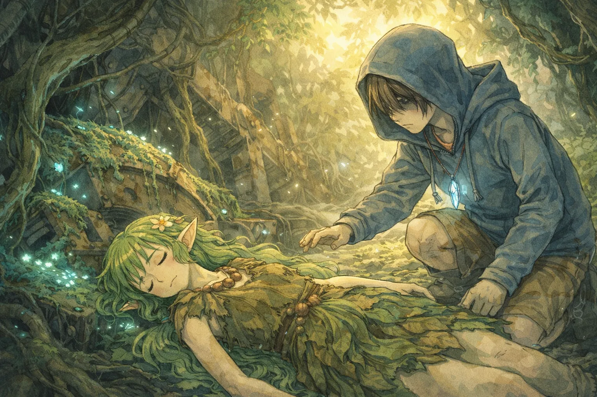

Prologue
邂逅の森
邂逅の森
The Meeting in the Forest of Giants
巨大な機械の残骸が樹木と絡み合い、淡い光を放つ苔が辺りを照らす「巨鋼の森」。 危険地帯であるこの森の奥深くで、スカベンジャーの少年・ルカは倒れている少女を見つける。
透き通るような銀髪と、長い耳。それは、この世界ではお伽話の中でしか語られない存在――エルフだった。 記憶を失い、怯える彼女を守るため、ルカは錆びついた銃を握りしめる。
「君は……空から落ちてきたの？」
孤独な少年の灰色の日々は、この出会いによって鮮やかに色づき始める。 それは、止まっていた世界の時間が、再び動き出す合図でもあった。
